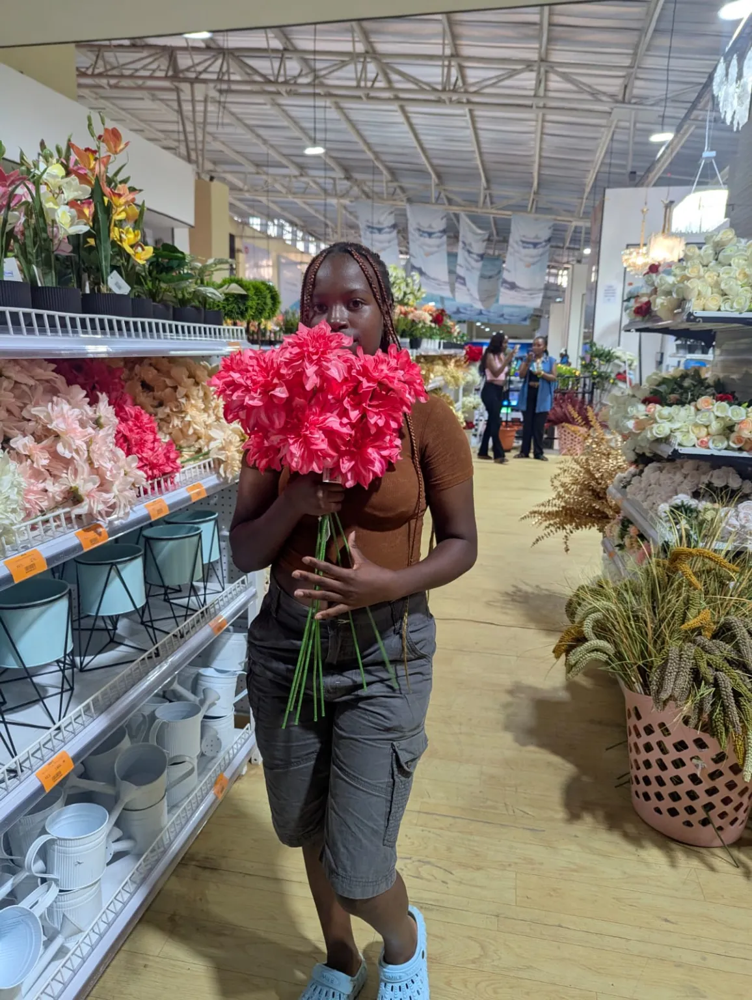

My education
Academic journey
Learning is a continuous journey of curiosity, practice and growth.
Jomo Kenyatta University of Agriculture and Technology
Programme: Bachelor of Science in Fisheries and Aquaculture
Year of study: Second Year
Student registration: SCB224-0280/2025
I am studying Fisheries and Aquaculture and developing my understanding of aquatic organisms, fisheries resources and aquaculture practices.
